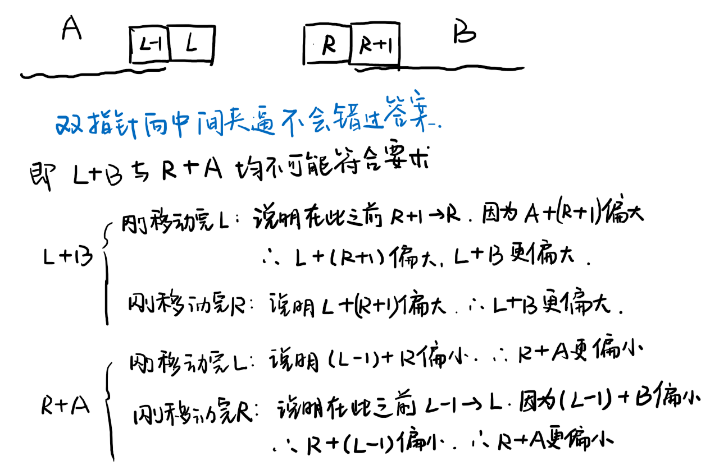

Given an array nums of n integers, are there elements a, b, c in nums such that a + b + c = 0? Find all unique triplets in the array which gives the sum of zero.
Note:
The solution set must not contain duplicate triplets.
Example:
Given array nums = [-1, 0, 1, 2, -1, -4],
A solution set is:
[
[-1, 0, 1],
[-1, -1, 2]
]
来源：力扣（LeetCode）
链接：https://leetcode-cn.com/problems/3sum
著作权归领扣网络所有。商业转载请联系官方授权，非商业转载请注明出处。
框架
1 | class Solution { |
1. 朴素
遍历每个三元组，判断是否和为0即可，O(n^3)。
但是还得想办法避免重复。
使用set作为初始的存储容器，每个符合条件的三元组在vector中由小到大存放，最后把set转储到vector即可。
不过set的insert()是O(logm)的，因此总的复杂度是O(n^3logm)，m是set.size()
提交失败，超时了。
1 | class Solution { |
2. 先处理两个，然后查找需要的一个
参考题目：1. Two Sum。使用map<pair<int, int>>，key为pair(ai, bi)，value为0 - nums[ai] - nums[bi]。key记录索引而不是直接记录值是为了方便判断避免多次使用同一个数。首先遍历问题是a, b，储存到map中，value储存还需要的值。map[]是O(m)，所以应该是O(mn^2)。然后遍历map，判断当前的value在nums中是否存在，O(mn)，m = map.size()。
提交失败，超时。原因是没有考虑到map[]并不是O(1)而是O(m)的。
实际上，上述内容中，并不需要使用map。
对于1. Two Sum，使用map/ unordered_map是为了将查找的时间由O(n)降低到O(1)/ O(logn)。
而在此处，我们首先把两个的处理好了，然后再遍历它，搜索剩余的一个，所以此处map是没必要的，反而会增加时间。
虽说map/ unordered_map可以记录pair<int, int>和相对应的需要的值，不过就算不记录value，后面再算也是可以的。
因此这里需要的只是一个对于插入是O(1)的数据结构，可以选择vector/ list/ set/ unordered_map等。
这里选择list，仍然是先记录索引。
不过提交仍然超时，原因是错估了list.size()的大小，它实际上能到达O(n^2)
1 | class Solution { |
3. 完全类似Two Sum，先确定一个元素，然后按照Two Sum来做，相当于n次Two Sum.
fix 1个元素是O(n)，然后Two Sum如果使用hash表（unordered_map)则为O(n)，总计O(n^2)。
仍然是需要set去重。
不过提交还是失败了，不知道为什么会超时，明明是O(n^2)的。
知道了，它不是O(n^2)的，而是O(n^2logm)的，而且最坏是O(n^2logn)的，比如题目卡的极端情况0,0,0,...,0。
利用set去重是有时间损失的，因为set内部靠红黑树建立有序关系，set.insert()是O(logn)的。
1 | class Solution { |
4. 排序+双指针+剪枝
排序：为了便于之后查找和为0的元素，并且便于去重。且O(nlogn)的时间复杂度对于大概O(n^2)的这道题来说不算什么。
双指针：首先确定一个元素，然后利用双指针在其右侧查找满足和为0的元素。
剪枝：由于是有序的，所以为了实现a+b+c=0，则最小的a必须满足a<0，如果到了a>0，可以直接剪枝结束了。
思路是：
- 首先由小到大排序，
O(nlogn)。 - 遍历fix每个元素作为
a，然后从该元素右侧的区间中寻找满足a + b + c = 0的元素b和c。 - 查找方法是设置双指针
left = i + 1,right = n - 1，然后二者向中心靠拢直至碰撞。当等式左侧结果大于0时，right--；当等式左侧结果小于0时，left++；等于0时，记录，并left++, right--。 - 由于寻找
b, c是从a的右侧寻找，且已经将数组由小到大排列，因此当a>0时就可剪枝结束遍历。 - 上述方法还需要进行去重。并不是选择和上述方法相同的利用
set去重（因为set去重有时间损失，O(logn)），而是在寻找a, b, c时直接去重。方法是当出现相等的元素时，先处理第一个元素然后再跳过后面的相等的，而不能跳过前面相等的只处理最后一个，比如-1, -1, 0, 1, 2。
这个解法的聪明之处：
- 用仅仅
O(nlogn)的时间进行了排序，方便了之后的去重和双指针的查找操作。 - 并不是fix一个元素然后完全仿照
2. Two Sum，因为后者不需要去重。 - 不使用
set去重，因为set.insert()有O(logn)的时间损失，而是在有序的基础上先匹配，后跳过。 - 使用双指针。因为已经是有序的了，所以利用双指针从两侧夹逼(
11. Container With Most Water)就可以固定到left和right。 - 双指针的移动为什么偏小就
left++，偏大就right--，参考下图：
1. Two Sum 与 15. 3Sum 的区别
two sum使用的是hash表，遍历一次数组O(n)就可以解决问题。3sum很类似于先fix一个元素，然后对右侧元素进行two sum。- 不过问题在于，
two sum是没有重复值的，3sum有重复值并且需要去重。 - 如果后期用
set去重，则会额外有O(logn)的时间损失。 - 如果还是使用
two sum并且在前期去重，则需要记录已经得到的数据组，需要额外的unordered_map<pair<int, int>, bool>，非常浪费空间。 - 所以
3sum采用的方法是双指针，并且从两侧夹逼，毕竟已经是有序数组了。 two sum也可以使用双指针，但是毕竟它不需要去重，并且利用hash表已经到达O(n)的复杂度了，再排序O(nlogn)利用双指针就有些多余了。
1 | class Solution { |